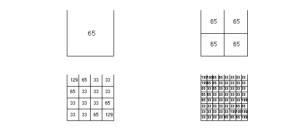

function AverageDegreeReduction2D
2D subdivision
Generally, Chebfun2 approximates globally smooth functions $f(x,y)$ by global low rank polynomial interpolants. However, in the bivariate rootfinding algorithm to solve
$$ f(x,y) = g(x,y) = 0, $$
we use piecewise smooth interpolants if the polynomial degrees are larger than $16$ in the $x$- or $y$-variable (of $f$ or $g$). In bivariate rootfinder the resultant based method recursively subdivides the rectangular domain and the functions $f(x,y)$ and $g(x,y)$ are approximated by piecewise smooth bivariate polynomial interpolants with each piece of degree at most $16$. Subdivision is useful for reducing the complexity of the bivariate rootfinding algorithm. The reduction in the complexity is determined by a parameter $\tau$ that measures the average degree reduction. Essentially subdivision means that much higher degree problems can be solved (see [1,2]).
The average degree reduction parameter
The parameter $\tau$ measures the average reduction in polynomial degrees of $f(x,y)$. That is, if a polynomial of degree $n$ (in the $x$- and $y$-variable) is required to approximate $f(x,y)$ on $[-1,1]\times[-1,1]$ then the average degree required to approximate $f$ on $[-1,r]\times[-1,s]$ (and the other subdomains) is $\tau n$, where $r$ and $s$ are two small arbitrary constants. Throughout this Example we take symmetric functions, i.e., $f(x,y) = f(y,x)$ since then the degree reduction is identical in the $x$ and $y$ direction, which considerably simplifies the discussion. The average degree reduction parameter was introduced in [1].
Rank one functions
A function $f(x,y)$ is of rank $1$ if it can can be written as a product of univariate functions, i.e., $f(x,y) = h(x)k(y)$. Since in this example we are considering only symmetric functions we have $f(x,y) = h(x)h(y)$. For rank $1$ functions the average degree reduction parameter is typically about $1/2$ because under subdivision the degree reduction is directly determined by the degree reduction in $h(x)$. The average degree reduction parameter for univariate functions is discussed in [2]. For example,
M = 2000; f = @(x,y) sin(M*x).*sin(M*y); compute_tau(f, 2) % Expected to be approximately 1/2
Tau = 0.50018
The parameter $\tau$ in this case is equal to $1/2$ because the number of oscillations of $f(x,y)$ in a rectangular domain $[a,b]\times[c,d]$ is directly proportional to $(b-a)(d-c)$. Moreover, the number of oscillations determines the number of points required to resolve the function. Therefore, each subdivision (in the $x$ or $y$ direction) halves the numerical degree of the polynomial interpolant and $\tau \approx 1/2$.
Here is a diagram that shows the numerical degrees after each level of subdivision:
subdivisionDiagram(f)
In general, if $h(x)$ is a univariate function with average degree reduction parameter $\tau$ then the rank $1$ function $f(x,y) = h(x)h(y)$ has the same average degree reduction parameter.
Toeplitz functions
A function $f(x,y)$ on $[-1,1]\times[-1,1]$ is defined as Toeplitz if there is a univariate function $h(t)$ on $[-2,2]$ such that $f(x,y) = h(x-y)$. Functions in this class are typically of rank at least two and the average degree reduction parameter cannot be understood from the univariate setting.
M = 20; f = @(x,y) sin(M*(x-y)); compute_tau(f, 2) % Expected to be approximately 1/sqrt(2) = 0.707
Tau = 0.90299
The average $\tau$ parameter can be explained since all the oscillations of $f$ occur along diagonals, i.e., $y=-x$ (rather than in the coordinate directions). Two subdivisions, one in the $x$ and one in the $y$ direction are required to halve the length of the diagonal lines and hence, $\tau^2 \approx 1/2$ and $\tau = 1/\sqrt{2}$.
Here is a diagram that shows the numerical degrees after each level of subdivision:
clf, subdivisionDiagram(f)

It can be seen that the numerical degree reduces by a factor of approximately $1/\sqrt{2}$ on each subdivision:
[m,n]=length(chebfun2(f)); max(m,n)./2.^(0:.5:1.5)
ans = Columns 1 through 3 65.000000000000000 45.961940777125584 32.500000000000000 Column 4 22.980970388562795
Symmetric Cauchy function
The symmetric Cauchy function is given by $f(x,y) = 1/(x+y)$ defined on $[a,b]\times[a,b]$, where $0<a<b$. This is a 2D generalisation of functions of the form $1/(x+c)$, which has been used to investigate the parameter $\tau$ in the univariate case [2]. The numerical degree of $f(x,y)$ can be determined by using Eliott's method for all $0<a<b$.
However, this is an example where the average degree reduction depends on the subdivision level. Initially subdivision is very helpful, but as more levels are taken subdivision helps less. For example,
a = 1; b = 100; f = @(x,y) 1./((b-a)/2*((x+1)+(y+1))+2*a); %f = 1/(x+y) on [a,b]x[a,b] clf, subdivisionDiagram(f)
Using Elliott's method we have an exact formula for the numerical degree of $f$, for example, the numerical degree in the bottom-left subdomain should be the following:
j=1;
for b = [100 50 25 17.5]
a = 1; r = b/a;
B = (r+3)/(r-1);
m(j) = ceil(log(4/(r-1)*eps^(-1)/sqrt(B^2-1))/log(B+sqrt(B^2-1)));
j=j+1;
end
m.'
ans =
121
86
62
52
Conclusion
Subdivision is an important technique for rootfinding to reduce the complexity of a rootfinding algorithm. Subdivision is most effective when the average degree reduction parameter is small (such as for rank one functions). Typically, we observe the $\tau$ parameter is approximately $1/\sqrt{2} = 0.707$ for bivariate functions.
function compute_tau(f, N)
% COMPUTE_TAU estimate the average degree reduction parameter
g = chebfun2(f); tol = 1e-14;
X = chebpoly2(g);
L = find(max(abs(rot90(X,2))) < tol,1,'last');
x = linspace(-1,1,2.^N+1);
tot = 0;
%[xx,yy] = meshgrid(x);
for j = 1:length(x)-1
for k = 1:length(x)-1
g = chebfun2(f, [x(j:j+1) x(k:k+1)]);
X = chebpoly2(g);
len = find(max(abs(rot90(X,2))) < tol,1,'last');
tot = tot + len;
end
end
avg = tot./(length(x)-1).^2;
tau = (avg/L).^(1./N);
fprintf('Tau = %1.5f',tau);
end
function subdivisionDiagram(f)
% SUBDIVISIONDIAGRAM draw a diagram to show subdivision and polynomial
% degrees.
LW = 'linewidth'; lw = 1;
FS = 'fontsize';
tol = 1e-14;
set(gcf, 'position', [0 0 600 480]), hold on
for levels = 0:3
fs = round(14-2.5*levels);
subplot(2,2,levels+1)
x = linspace(-1,1,2.^levels+1);
if levels > 0
plot([-1,1],[x;x].','k-',LW,lw),
plot([x;x].',[-1,1],'k-',LW,lw), axis equal
end
plot([-1 1 1 -1 -1],[-1 -1 1 1 -1],'k-',LW,lw), axis equal
for j = 1:length(x)-1
for k = 1:length(x)-1
g = chebfun2(f, [x(j:j+1) x(k:k+1)]);
X = chebpoly2(g);
len = find(max(abs(rot90(X,2))) < tol,1,'last');
text(mean(x(j:j+1))-.1,mean(x(k:k+1)),sprintf('%u',len),FS,fs)
end
end
axis(1.05*[-1,1,-1,1]), axis off
end
end
end
References
[1] Y. Nakatsukasa, V. Noferini, and A. Townsend, Computing the common zeros of two bivariate functions via Bezout resultants, Numerische Mathematik, to appear.
[2] A. Townsend, 1D Subdivision and the average degree reduction, Chebfun Example, May 2013.
[3] A. Townsend and L. N. Trefethen, An extension of Chebfun to two dimensions, SIAM Journal on Scientific Computing, 35 (2013), C495-C518.